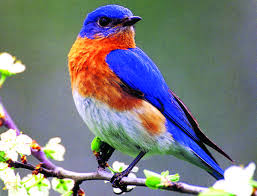
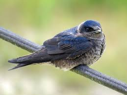
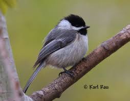

Birdhouses
Bluebirds Nest Boxes
Bluebird houses are quite simple, with a small entrance hole and large roof for extra protection. Bluebirds’ boxes are commonly taken over by other small birds like House Sparrows, and because their population is declining, it is important to include a cone-shaped predator baffle and monitor the activity around the nest box.Place a bluebird box in the sun and about 4 to 6 feet off the ground.

Purple Martin Colonies
Purple Martins nest in colonies, so their bird houses are very different. Depending on how many you want to attract, you must build them in multiple levels. These bird houses are usually rounded, and should feature a protective roof as well. You can also simply hang several gourds in a cluster. This will help your chances of hosting some Purple Martins! Purple Martin nests should be set about 40 feet from other obstacles, including trees and buildings at a height of 10 to 15 feet high.

Wrens and Chickadees
To attract Wrens, the most important aspect of the bird house is the hole. Make sure the diameter is 1 1/4” which is large enough for all types of Wrens and Black-capped Chickadees to use, but too small for House Sparrows. Tree Swallows will also use this type of house. Wren bird houses should be attached to a tree or a pole. The house should be placed close to or within some cover. The height can be anywhere from 3 feet to 10 feet off the ground. Black-Capped Chickadees also prefer a well-covered bird house.

Brayden
Hancock Highschool
Exploring Computer Science Pilot Couse,3rd Block
May, 2018
https://bkillough.github.io/instructional_website.html/